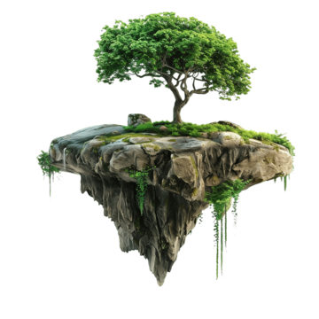
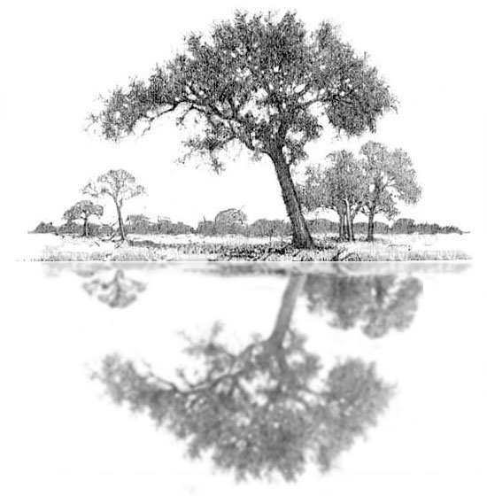
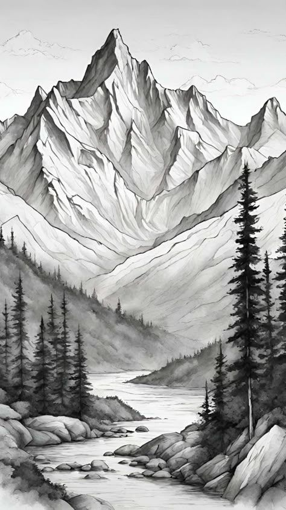
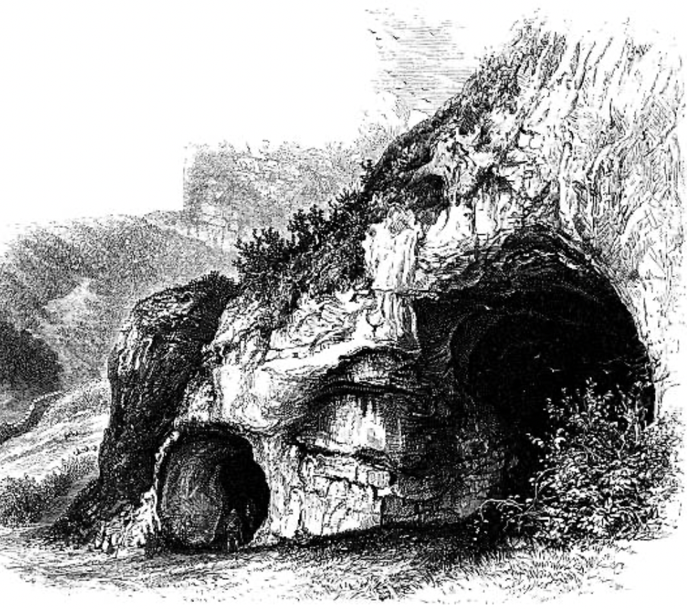
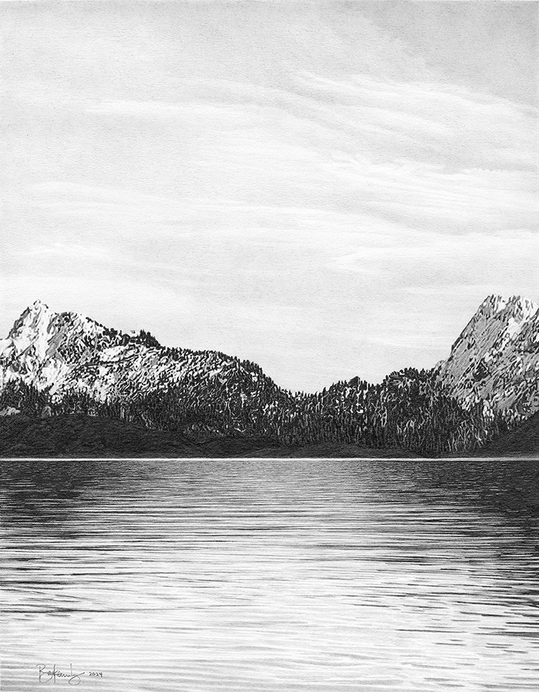

“Island where all becomes clear...”
An exploration of language, devices, and desire in Utopia by Wisława Szymborska.
Discover Utopia ↓
“Island where all becomes clear...”
An exploration of language, devices, and desire in Utopia by Wisława Szymborska.
Discover Utopia ↓The Tree of Valid Supposition grows here with branches disentangled since time immemorial.
The Tree of Valid Supposition grows here with branches disentangled since time immemorial.
Echoes stir unsummoned and eagerly explain all the secrets of the worlds.
For all its charms, the island is uninhabited, and the faint footprints scattered on its beaches turn without exception to the sea.
As if all you can do here is leave and plunge, never to return, into the depths.
Into unfathomable life.


Bushes bend beneath the weight of proofs.
Devices: Alliteration, Imagery, Symbol

The Tree of Valid Supposition grows here with branches disentangled since time immemorial.
Devices: Metaphor, Imagery, Symbol

The Tree of Understanding, dazzlingly straight and simple, sprouts by the spring called Now I Get It.
Devices: Metaphor, Alliteration, Imagery, Symbol

The thicker the woods, the vaster the vista: the Valley of Obviously.
Devices: Metaphor, Alliteration, Imagery, Symbol

On the right a cave where Meaning lies.
Devices: Personification, Imagery, Symbol

On the left the Lake of Deep Conviction.
Devices: Metaphor, Imagery, Symbol
“A map of the world that does not include Utopia is not worth even glancing at, for it leaves out the one country at which Humanity is always landing. And when Humanity lands there, it looks out, and, seeing a better country, sets sail. Progress is the realization of Utopias.”
- OSCAR WILDE
“Poetry lifts the veil from the hidden beauty of the world, and makes familiar objects be as if they were not familiar.”
- PERCY BYSSHE SHELLEY
“Poetry is the spontaneous overflow of powerful feelings: it takes its origin from emotion recollected in tranquillity.”
- WILLIAM WORDSWORTH
“...For all its charms, the island is uninhabited,
and the faint footprints scattered on its beaches
turn without exception to the sea.
As if all you can do here is leave
and plunge, never to return, into the depths.
Into unfathomable life.”